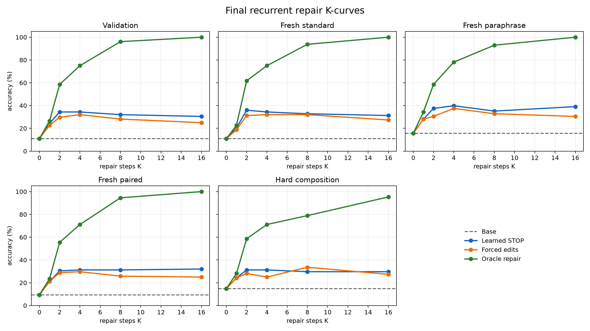
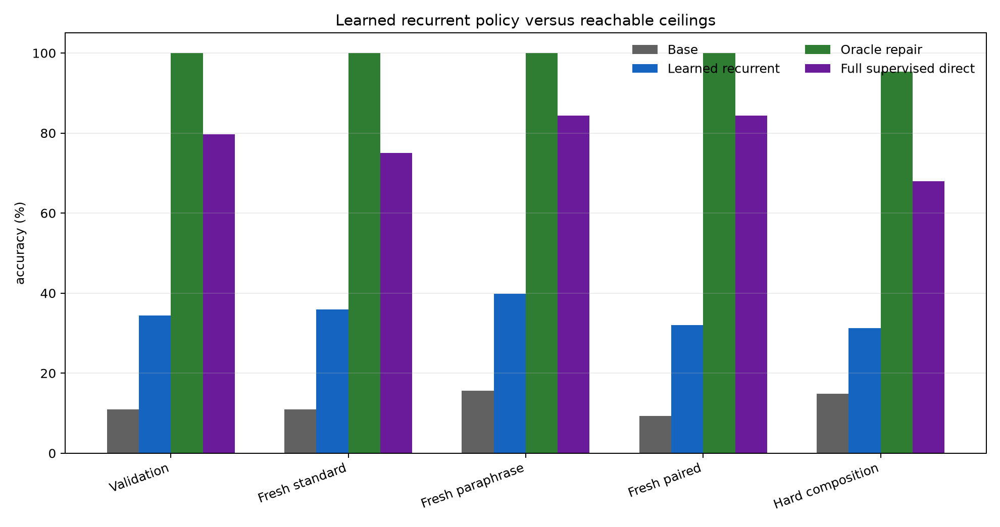
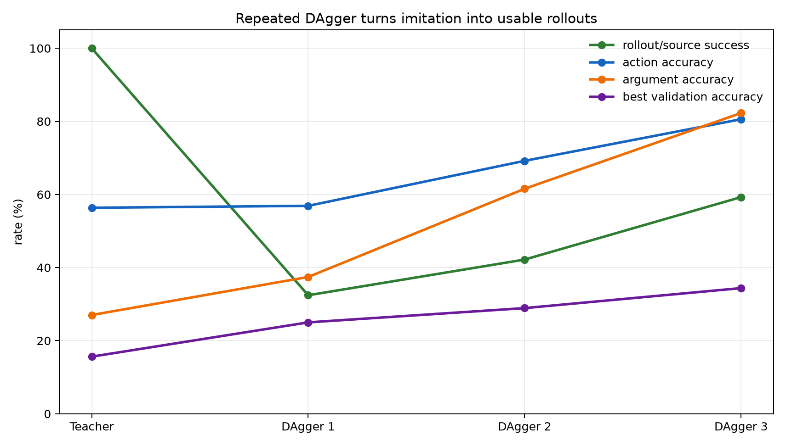
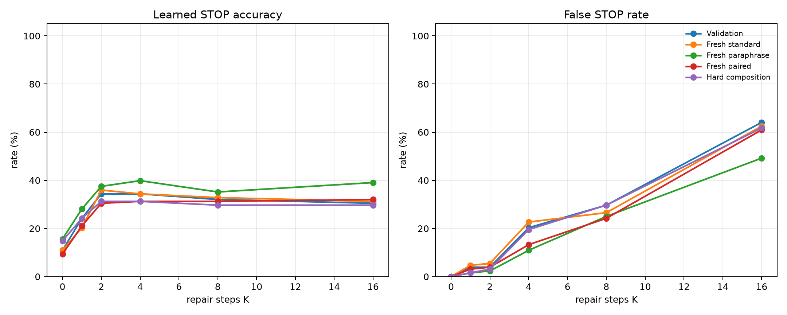
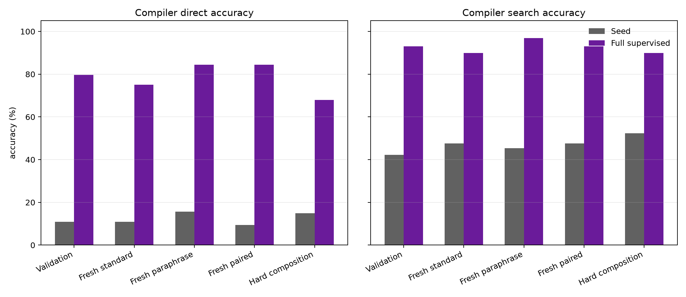

Recurrent VM Repair Policy Attached to Frozen Qwen
A standalone experiment on learned private compute steps, typed bytecode, and DAgger policy learning.
Abstract
This experiment tests whether a frozen 4B language model can be given a learned recurrent program-repair loop at posttraining time. A compiler reads frozen Qwen/Qwen3-4B token hidden states and emits a typed stack-machine program. A repair policy observes the prompt, current program, and VM execution trace; chooses one edit or STOP; executes the edited program; and repeats for up to K private steps.
Setup
- Base model:
Qwen/Qwen3-4B, frozen. - Seed examples: 192. Recurrent-policy examples: 1024. Full-supervised ceiling examples: 1024 plus seed.
- Evaluation size: 128 per split.
- Recurrent budgets:
K = 0, 1, 2, 4, 8, 16. - Main run:
main_recurrent_vm_repair_crossattn_dagger3_s192_c1024.
Main Results
| Split | Base | Learned STOP | Forced edits | Oracle repair | Full sup. direct | Full sup. search |
|---|---|---|---|---|---|---|
| Validation | 10.9% | 34.4% (K=2) | 32.0% (K=4) | 100.0% | 79.7% | 93.0% |
| Fresh standard | 10.9% | 35.9% (K=2) | 32.0% (K=4) | 100.0% | 75.0% | 89.8% |
| Fresh paraphrase | 15.6% | 39.8% (K=4) | 37.5% (K=4) | 100.0% | 84.4% | 96.9% |
| Fresh paired | 9.4% | 32.0% (K=16) | 29.7% (K=4) | 100.0% | 84.4% | 93.0% |
| Hard composition | 14.8% | 31.2% (K=2) | 33.6% (K=8) | 95.3% | 68.0% | 89.8% |


DAgger Dynamics
| Phase | Source success | Action acc. | Arg acc. | Val best | Hard best |
|---|---|---|---|---|---|
| teacher policy | 100.0% | 56.4% | 27.0% | 15.6% (K=2) | 21.1% (K=2) |
| dagger policy r1 | 32.4% | 56.9% | 37.4% | 25.0% (K=16) | 29.7% (K=4) |
| dagger policy r2 | 42.2% | 69.2% | 61.6% | 28.9% (K=16) | 28.1% (K=4) |
| dagger policy r3 | 59.3% | 80.6% | 82.3% | 34.4% (K=2) | 31.2% (K=2) |

Repeated on-policy correction is the main learned-policy lever. Rollout success rises from 32.4% after round 1 to 59.3% by round 3, while argument accuracy rises to 82.3%.
STOP Behavior

Learned STOP is useful but imperfect. Several splits peak at moderate K, while larger K can add false STOPs or unnecessary edits. The oracle curve shows this is a policy-learning bottleneck, not a limit of the VM repair environment.
Compiler Ceiling

The full-supervised compiler reaches 68.0-84.4% direct accuracy and 89.8-96.9% answer-verified search accuracy, confirming that the frozen hidden states carry enough information for much stronger program prediction.
Bottom Line
The recurrent VM loop works, but it is not yet close to the oracle. The next high-impact step is to add value learning or advantage-weighted imitation so STOP and edit decisions are trained against expected VM-state improvement rather than only next-action labels.
Artifacts
experiments/qwen_recurrent_vm_repair_policy/runs/main_recurrent_vm_repair_crossattn_dagger3_s192_c1024/experiments/qwen_recurrent_vm_repair_policy/analysis/large_artifacts/qwen_recurrent_vm_repair_policy/checkpoints/main_recurrent_vm_repair_crossattn_dagger3_s192_c1024/